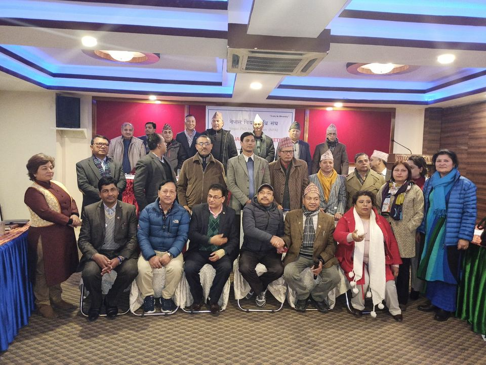
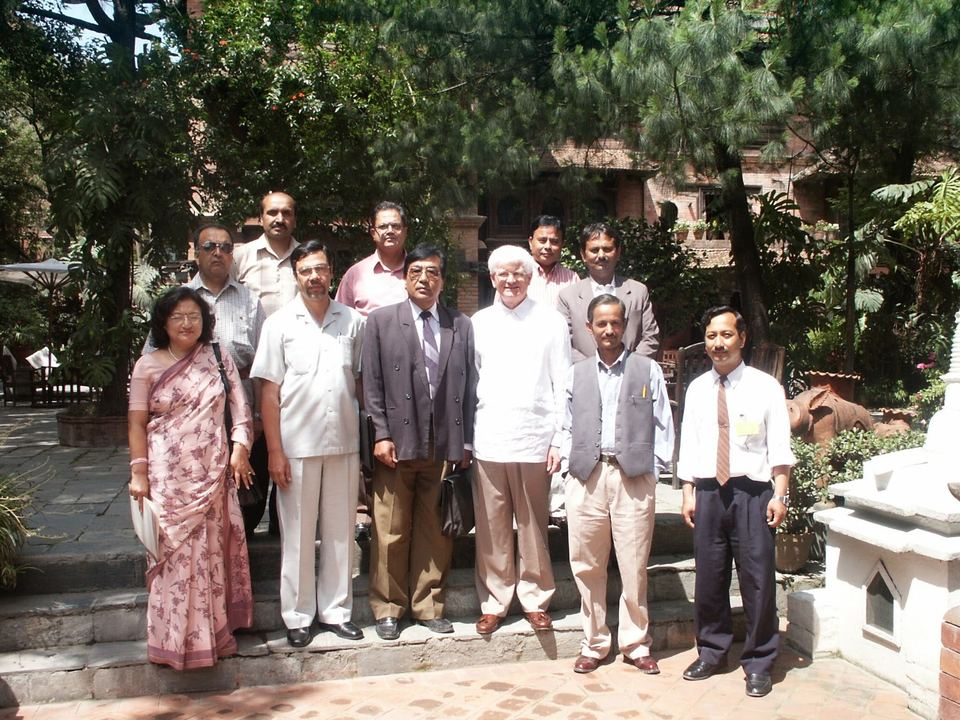
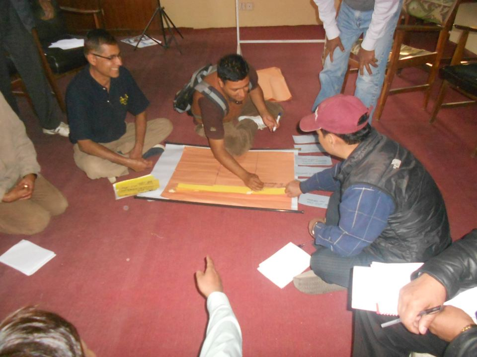
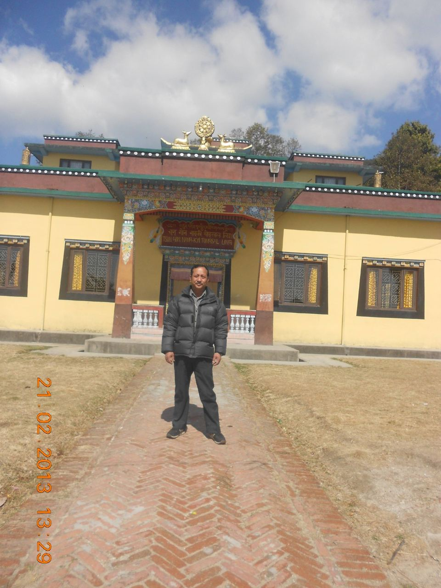

About
Tourism economist. Ph.D. in Tourism Economical Science. More than three decades in Nepal’s tourism sector.

Career
I work on the development, promotion and sustainable management of Nepal’s tourism sector.
I have worked with the Government of Nepal, Nepal Tourism Board, the National Planning Commission, Lumbini Development Trust, local governments, international development agencies, private tourism organizations and academic institutions.
My main areas are tourism policy, strategic planning, destination development, sustainable tourism, market development, heritage conservation and human-resource development.
My aim is to turn tourism knowledge into policies, strategies, plans, institutions, products and practical development work.
Recent work includes the 15-year Tourism Development Strategy for Bagmati Province and a feasibility study of an integrated tourism programme in Bhaktapur.
The tourism I work toward
- Market-oriented
- Sustainable
- Decentralized
- Community-inclusive
- Knowledge-based
- Economically productive
Education
-
1993
Ph.D., Tourism Economical Science
Sofia University, Higher Testimonial Committee, Sofia, Bulgaria
-
1987
B.Sc. and M.Sc. (M.A.), Tourism Economy
Economic University, VINS, Varna, Bulgaria
-
1980
B.Com., Commerce and Public Administration
Tribhuvan University, Public Youth Campus, Kathmandu
Key subjects studied
- Sustainable Tourism Development and Management
- Tourism Marketing and Promotion (NTO marketing and promotion)
- Econometric Modulation of Statistics in Tourism
- Application of Mathematical Methods in Tourism Economics
- Consumer Behavior and Motivation in Tourism
- Business Management in Tourism
- Geography, History and Culture in Tourism
- Social Psychology, Organization and Technology in Tourism
- Hotel and Catering Management
- Accounting, Effectiveness, Efficiency and Pricing in Tourism Management
- International Monetary and Financial Relations in Tourism
- Micro Finance and Credit in Tourism
- Political Economics in Tourism
- Planning and Balance of National Economy
- Automated Management Systems, Computing Technology and Programming
- Seminar Management and Specialized Tourist Guide courses
Training
- 1985 Trekking Tourism, Varna University
- 1988 City Tourist Guide, HMTTC, Kathmandu
- 1993 Computer software applications and SPSS statistics, ACMBUL, Varna
- 1996 Tour operations, Yeti Travels (Pvt.) Ltd.
- 1997 Tour operations and tour guiding, SATS human resource development programme, Kathmandu
- 2002 GIS applications (ArcView, ArcInfo, ILWIS), Tribhuvan University
Languages
- Newari Mother tongue
- Nepali Native
- English Excellent: reading, writing, speaking
- Bulgarian Excellent: reading, writing, speaking
Doctoral thesis
Tourism is a “dream industry”. It sells a fantasy, and in a world of imagination the potential is endless.
My thesis argued that Nepal is physically ideal for vibrant international tourism, that tourism can reduce poverty when it is managed sustainably, and that Nepal’s volatility comes from centralism, seasonality and weak infrastructure. The remedy is an integrated plan with progressive decentralization, conservation, people’s participation, political commitment and targeted marketing.
Teaching and curriculum
Lecturing in tourism, management and research methods since 1996.
Courses taught
- Service Marketing
- Leadership and Organizational Behavior
- Organizational Behavior and Management
- Marketing for Managers
- Marketing Management
- Principles of Marketing
- Consumer Behavior
- Business Environment
- Research Methodology
- Research Methodology and Statistics
- Research Project and Diploma Paper
- Foundation of Travel and Tourism Management
- Tourism in Nepal
- Tourism Management
- Tourism Planning and Policy
- Tourism Marketing and Promotion
- Sustainable Tourism for Sustainable Development
- Culture and Social Psychology for Tourism
- Culture Tourism
- Rural Development, Ecotourism and Village Tourism
- Entrepreneurship Development in Nepal
- Finance and Capital Structure Management
- Travel Trade Management and Tourist Service Operation
- Tour, Trek and Rafting Management
Universities and colleges
- Tribhuvan University: Public Youth Campus, Padma Kanya Campus, Trichandra Multiple Campus
- Prime College, Khusibun, Kathmandu
- Kathmandu University: Little Angels College of Management
- Nepal Academy of Tourism and Hospitality Management (NATHM)
- SAAN International College, Faculty of Management
- Nepal College of Travel and Tourism Management
- REHDON College, Samakhusi, Kathmandu
Curriculum developed for Tribhuvan University
- Fundamentals of Travel and Tourism Management (1st semester) (2023, 2025)
- Tourism in Nepal (2nd semester) (2023, 2025)
- Culture and Social Psychology for Tourism (4th semester) (2021, 2023)
- Sustainable Tourism Development (5th semester)
- Tour Guiding and Escorting (5th semester)
- Tourism Entrepreneurship Development (5th semester)
- Tourism Geography (5th semester)
- Adventure Tourism (6th semester)
- Event Management (6th semester)
- Tourism in Nepalese Society and Politics 2 (6th semester)
- Tourism Planning and Policies (6th semester)
- Visitors Management (7th semester)
Professional affiliations
Boards, associations, societies and fellowships since 1990.
2017
Treasurer and Executive Director
Nepal Ph.D. Association
2015
Executive Director
Udaaya Samaj, Kathmandu
2013
Board of Director
Kathmandu Upatyaka Khanepani Limited (KUKL)
2011
Board of Director
Nepal Water Supply Corporation
2010
Faculty Member and Lecturer
Public Youth Campus
2006
Advisor
Village Tourism Promotion Forum Nepal (VITOF-N)
2005
Lecturer
Nepal Academy of Tourism and Hotel Management, Rabi Bhavan
2005
Life Member
Dharmodaya Sabha, national Buddhist organization
2003
Life Member
Heritage Society of Bishalnagar-Hadigaon, Kathmandu
2002
Lecturer in Culture Tourism
Tribhuvan University, Padma Kanya Multiple Campus
2002
E-Profession Member
Ecotourism Society, U.S.A.
2001
Member
Sustainable Tourism Network, Nepal Tourism Board
1999
Senior Consultant
National Travel and Tourism Consultants
1999
Management Consultant
Thamel Tourism Development Committee
1998
Member, Planning and Resource Mobilization
Siddhartha University, Nala
1997
Member
Nepal-Israel Culture and Friendship Association
1997
Member
Nepal-Australia Culture and Friendship Association
1996
Member
Management Association of Nepal
1996
Faculty Member and Lecturer
REHDON College, and Nepal College of Travel and Tourism Management
1996
Executive Director
Nepal-German Hilfe Beilngries, Saligram Balgriha
1995
Life Member
Nepal Heritage Society, Kathmandu
1994
Member
Tourist Guide Association of Nepal
1994
Executive Director
Kathmandu Environment Education Project
1990 to 1993
Fellowships
Tourism Concern (U.K.), Association of Business Executives (U.K.), Association for Computing Machinery (U.S.A.), ACMBUL Sofia
Honours and awards
-
1993
Ph.D. Merit Award
Higher Testimonial Committee, Economics University, Sofia
-
1987
M.Sc. First Class Honours
Economic University, Varna, Bulgaria
-
1996
Mahendra Vidya Bhushan
His Majesty King Birendra Bir Bikram Shah Dev
-
2000
Scholarly Honoured, Gold Medal
Shree Degukhyo Guthi
-
2006
Judge, Nationwide Essay Competition
Nepal Tourism Board Award
-
Honoured
Scholarly achievement
Village Tourism Promotion Forum and Nepal Tourism Board



